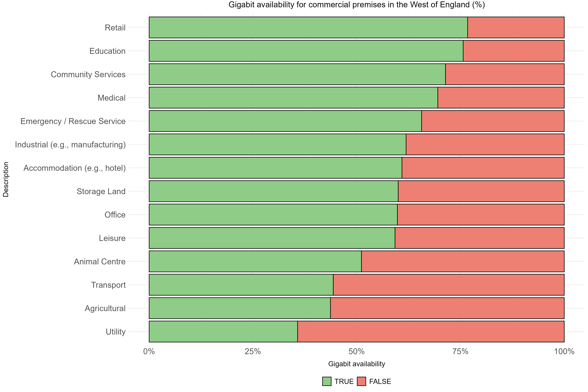
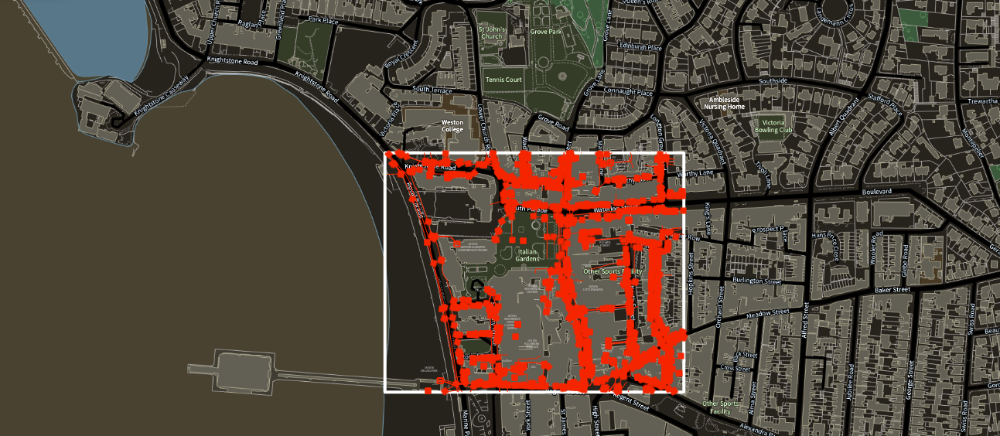

Welcome to this update on research and analysis activity within the West of England’s Digital Office. Recent activity includes analysis of the interaction between digital exclusion, low income and residence type in the West of England. Highlights also included exploratory analysis relating to digital connectivity in commercial premises across the region.
In terms of access to new data, we were recently onboarded to the National Underground Asset Register (NUAR) while M2Catalyst data will provide us with new insight relating to mobile connectivity. In this update, we also make a call for future research and analysis needs, while providing a forward look of activity taking place later in 2026.
In which council wards do we see digital exclusion risk, low income and multi-dwelling unit (MDU) presence interact?
Previous reviews of national data have found that digital exclusion is clearly related to income poverty and to risk factors of income poverty in the UK. In the West of England, research from the Good Things Foundation estimates that 14% of adults are ‘very limited’ users or non-users of the internet. This equates to around 100,000 residents within the region. Our analysis sought to identify whether the link between digital exclusion and income poverty also extends to council wards across the West of England, while also considering the impact the type of housing has upon these two factors.
There is a strong, positive and statistically significant relationship between digital exclusion risk and low income in the West of England. This means that, for each council ward in the region, an increase in digital exclusion risk is a good predictor of an increase in the proportion of children in absolute low-income families.
We then set out to understand the role of housing type. Specific challenges exist around deployment of broadband infrastructure in multi-dwelling units (MDUs). These units are residential and involve multiple premises being located within a single building (e.g., a block of flats). Poor access to digital infrastructure is likely to increase digital exclusion risk, which is particularly impactful when combined with additional drivers of poverty associated with housing tenure and dwelling type.
Overall, there is a mix of council wards with a higher-than-average and lower-than-average proportion of MDUs where the relationship between low income and digital exclusion risk is strong. This challenges an assumption that digital exclusion risk in the West of England is exclusive to rural areas. Tailored interventions are, therefore, likely to be required to address issues relating to digital exclusion and child poverty across the region.
Five council wards are above the MCA average in relation to digital exclusion risk, children in low-income families and the presence of MDUs: Lawrence Hill (Bristol), Eastville (Bristol), Twerton (Bath & North East Somerset), Frome Vale (Bristol) and St George West (Bristol).
How many commercial premises lack gigabit capability in the West of England?
When Building Digital UK (BDUK) data are overlaid with Ordnance Survey classification codes, commercial premises can be identified to analyse digital connectivity in particular premises. Of 31,527 commercial premises in the West of England included in this analysis, just under a third (10,437) lack gigabit capability. The chart below examines gigabit availability by Ordnance Survey description.

BDUK also publish information relating to whether a premises is included in future plans for delivering gigabit availability. More than one-in-five commercial premises in the West of England (7,032) are without gigabit capability with no plans to address this through BDUK activity.
We are now looking to pilot further analysis based on small geographic areas, with further emphasis on connectivity requirements across different types of premises and businesses, while also linking additional data relating to the premises itself (e.g., size of premises). Exploring uptake of high-speed broadband across commercial premises may be an important next step.
Access secured to the National Underground Asset Register (NUAR), mobile data procured and latest Digital Exclusion Risk Index (DERI) scores published

We’re among the first regions onboarded to the National Underground Asset Register (NUAR). This follows close collaboration between the Combined Authority’s Digital Transformation and GIS & Data teams, and with the Department for Science, Innovation and Technology and Ordnance Survey.
NUAR gives us access to a detailed view of underground assets across sectors like telecoms, energy, and water. This helps to ensure we coordinate infrastructure works to reduce disruption, cut costs, and avoid costly retrofitting. If you’d like to know more, get in touch with the Digital Transformation team.
As of early 2026, we have also procured access to M2Catalyst’s Crowd Site Intel platform for mobile connectivity data, ensuring up-to-date and reliable insights relating to regional mobile coverage and performance at small geographical levels.
Recently updated Digital Exclusion Risk Index (DERI) scores, first published by Greater Manchester Combined Authority, are now available via the West of England Open Data Portal. These scores identify the risk of digital exclusion for each Lower Super Output Area (LSOA) in the region and are derived from a range of publicly available source data, including Census data and figures on broadband availability from Ofcom.
Forward look and a call for suggestions
In the early stages of 2026, the primary focus has been planning research and analysis activities to support the evaluation of the Digital Office. We are also mapping existing digital connectivity across West of England growth zones with a view to defining long-term infrastructure requirements by geography and sector.
We are open to suggestions for future research and analysis, as well as collaboration with our partners across local government, academia and industry to deliver research and analysis relating to digital connectivity. Future suggestions for content to be covered in these updates would also be welcome - if you are interested in any of the above, please get in touch via email!